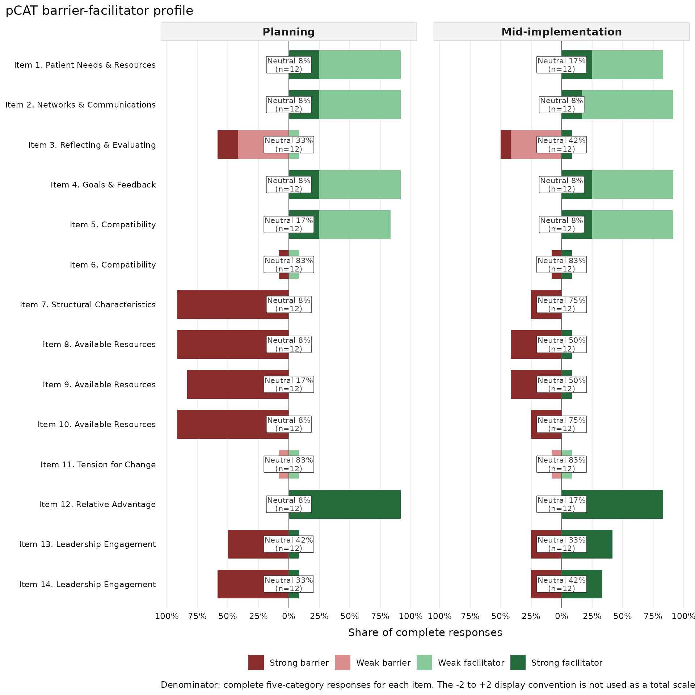

Read-before-use boundary
The pCAT has 14 items and two response components per item.
pcatR preserves those components and derives item-level
descriptive categories. It does not calculate an overall validated pCAT
scale score. Open the complete technical guide with
pcat_user_guide() before using operational or research
data.
Inspect the instrument and mappings
pcat_items("both")
#> item_id item_key
#> 1 1 patient_needs
#> 2 2 communications
#> 3 3 data_tracking
#> 4 4 leadership_goals
#> 5 5 clinician_values
#> 6 6 clinical_processes
#> 7 7 structures_policies
#> 8 8 space
#> 9 9 time
#> 10 10 other_resources
#> 11 11 tension_for_change
#> 12 12 relative_advantage
#> 13 13 higher_level_leaders
#> 14 14 closest_leaders
#> item_text
#> 1 People here regularly seek to understand the needs of patients and make changes to better meet those needs.
#> 2 I have open lines of communication with everyone needed to make the change.
#> 3 I have access to data to help track changes in outcomes.
#> 4 The change is aligned with leadership goals.
#> 5 The change is aligned with clinician values.
#> 6 The change is compatible with existing clinical processes.
#> 7 The structures and policies in place here enable us to make the change.
#> 8 We have sufficient space to accommodate the change.
#> 9 We have sufficient time dedicated to make the change.
#> 10 We have other needed resources to make the change (staff, money, supplies, etc.).
#> 11 People here see the current situation as intolerable and that the change is needed.
#> 12 People here see the advantage of implementing this change versus an alternative change.
#> 13 Higher level leaders are committed, involved, and accountable for the planned improvement.
#> 14 Leaders I work with most closely are committed, involved, and accountable for the planned improvement.
#> cfir_original_domain cfir_original_construct cfir_2022_domain
#> 1 Outer Setting Patient Needs & Resources Inner Setting
#> 2 Inner Setting Networks & Communications Inner Setting
#> 3 Process Reflecting & Evaluating Process
#> 4 Inner Setting Goals & Feedback Inner Setting
#> 5 Inner Setting Compatibility Individuals
#> 6 Inner Setting Compatibility Inner Setting
#> 7 Inner Setting Structural Characteristics Inner Setting
#> 8 Inner Setting Available Resources Inner Setting
#> 9 Inner Setting Available Resources Individuals
#> 10 Inner Setting Available Resources Inner Setting
#> 11 Inner Setting Tension for Change Inner Setting
#> 12 Intervention Characteristics Relative Advantage Innovation
#> 13 Inner Setting Leadership Engagement Individuals
#> 14 Inner Setting Leadership Engagement Individuals
#> cfir_2022_subdomain cfir_2022_construct
#> 1 <NA> Culture: Recipient-Centeredness
#> 2 <NA> Communications
#> 3 <NA> Reflecting & Evaluating
#> 4 <NA> Mission Alignment
#> 5 Roles & Characteristics Innovation Deliverers: Capability
#> 6 <NA> Compatibility
#> 7 <NA> Structural Characteristics: Work Infrastructure
#> 8 <NA> Available Resources: Space
#> 9 Roles & Characteristics Innovation Deliverers: Opportunity
#> 10 <NA> Available Resources: Materials & Equipment
#> 11 <NA> Tension for Change
#> 12 <NA> Innovation Relative Advantage
#> 13 Roles & Characteristics High-Level Leaders: Motivation
#> 14 Roles & Characteristics Mid-Level Leaders: Motivation
#> cfir_2022_secondary_construct
#> 1 <NA>
#> 2 <NA>
#> 3 <NA>
#> 4 <NA>
#> 5 <NA>
#> 6 <NA>
#> 7 <NA>
#> 8 <NA>
#> 9 <NA>
#> 10 Available Resources: Funding
#> 11 <NA>
#> 12 <NA>
#> 13 <NA>
#> 14 <NA>
#> cfir_2022_construct_all
#> 1 Culture: Recipient-Centeredness
#> 2 Communications
#> 3 Reflecting & Evaluating
#> 4 Mission Alignment
#> 5 Innovation Deliverers: Capability
#> 6 Compatibility
#> 7 Structural Characteristics: Work Infrastructure
#> 8 Available Resources: Space
#> 9 Innovation Deliverers: Opportunity
#> 10 Available Resources: Materials & Equipment; Available Resources: Funding
#> 11 Tension for Change
#> 12 Innovation Relative Advantage
#> 13 High-Level Leaders: Motivation
#> 14 Mid-Level Leaders: Motivation
#> cfir_2022_mapping_count
#> 1 1
#> 2 1
#> 3 1
#> 4 1
#> 5 1
#> 6 1
#> 7 1
#> 8 1
#> 9 1
#> 10 2
#> 11 1
#> 12 1
#> 13 1
#> 14 1
#> cfir_2022_mapping_note
#> 1 One primary updated-CFIR construct per the article main-text mapping.
#> 2 One primary updated-CFIR construct per the article main-text mapping.
#> 3 One primary updated-CFIR construct per the article main-text mapping.
#> 4 One primary updated-CFIR construct per the article main-text mapping.
#> 5 The article main-text list uses "Innovation Deliverers: Capability"; Supplementary Table S3 uses the singular label "Innovation Deliverer: Capability".
#> 6 One primary updated-CFIR construct per the article main-text mapping.
#> 7 One primary updated-CFIR construct per the article main-text mapping.
#> 8 One primary updated-CFIR construct per the article main-text mapping.
#> 9 The article main-text list uses "Innovation Deliverers: Opportunity"; Supplementary Table S3 uses the singular label "Innovation Deliverer: Opportunity".
#> 10 Supplementary Table S3 maps this item to both Available Resources: Materials & Equipment and Funding; the article main-text list of 14 primary constructs names Materials & Equipment.
#> 11 One primary updated-CFIR construct per the article main-text mapping.
#> 12 The article main-text list uses "Innovation Relative Advantage"; Supplementary Table S3 uses the shorter label "Relative Advantage".
#> 13 One primary updated-CFIR construct per the article main-text mapping.
#> 14 One primary updated-CFIR construct per the article main-text mapping.
#> instrument_version instrument_source_doi
#> 1 pCAT 14-item final version 10.1186/s43058-022-00380-5
#> 2 pCAT 14-item final version 10.1186/s43058-022-00380-5
#> 3 pCAT 14-item final version 10.1186/s43058-022-00380-5
#> 4 pCAT 14-item final version 10.1186/s43058-022-00380-5
#> 5 pCAT 14-item final version 10.1186/s43058-022-00380-5
#> 6 pCAT 14-item final version 10.1186/s43058-022-00380-5
#> 7 pCAT 14-item final version 10.1186/s43058-022-00380-5
#> 8 pCAT 14-item final version 10.1186/s43058-022-00380-5
#> 9 pCAT 14-item final version 10.1186/s43058-022-00380-5
#> 10 pCAT 14-item final version 10.1186/s43058-022-00380-5
#> 11 pCAT 14-item final version 10.1186/s43058-022-00380-5
#> 12 pCAT 14-item final version 10.1186/s43058-022-00380-5
#> 13 pCAT 14-item final version 10.1186/s43058-022-00380-5
#> 14 pCAT 14-item final version 10.1186/s43058-022-00380-5
#> mapping_source_doi content_license
#> 1 10.1186/s43058-026-00956-5 CC BY 4.0
#> 2 10.1186/s43058-026-00956-5 CC BY 4.0
#> 3 10.1186/s43058-026-00956-5 CC BY 4.0
#> 4 10.1186/s43058-026-00956-5 CC BY 4.0
#> 5 10.1186/s43058-026-00956-5 CC BY 4.0
#> 6 10.1186/s43058-026-00956-5 CC BY 4.0
#> 7 10.1186/s43058-026-00956-5 CC BY 4.0
#> 8 10.1186/s43058-026-00956-5 CC BY 4.0
#> 9 10.1186/s43058-026-00956-5 CC BY 4.0
#> 10 10.1186/s43058-026-00956-5 CC BY 4.0
#> 11 10.1186/s43058-026-00956-5 CC BY 4.0
#> 12 10.1186/s43058-026-00956-5 CC BY 4.0
#> 13 10.1186/s43058-026-00956-5 CC BY 4.0
#> 14 10.1186/s43058-026-00956-5 CC BY 4.0
pcat_construct_map("2022", include_secondary = TRUE)
#> item_id item_key cfir_version cfir_domain
#> 1 1 patient_needs 2022 Inner Setting
#> 2 2 communications 2022 Inner Setting
#> 3 3 data_tracking 2022 Process
#> 4 4 leadership_goals 2022 Inner Setting
#> 5 5 clinician_values 2022 Individuals
#> 6 6 clinical_processes 2022 Inner Setting
#> 7 7 structures_policies 2022 Inner Setting
#> 8 8 space 2022 Inner Setting
#> 9 9 time 2022 Individuals
#> 10 10 other_resources 2022 Inner Setting
#> 11 10 other_resources 2022 Inner Setting
#> 12 11 tension_for_change 2022 Inner Setting
#> 13 12 relative_advantage 2022 Innovation
#> 14 13 higher_level_leaders 2022 Individuals
#> 15 14 closest_leaders 2022 Individuals
#> cfir_subdomain cfir_construct
#> 1 <NA> Culture: Recipient-Centeredness
#> 2 <NA> Communications
#> 3 <NA> Reflecting & Evaluating
#> 4 <NA> Mission Alignment
#> 5 Roles & Characteristics Innovation Deliverers: Capability
#> 6 <NA> Compatibility
#> 7 <NA> Structural Characteristics: Work Infrastructure
#> 8 <NA> Available Resources: Space
#> 9 Roles & Characteristics Innovation Deliverers: Opportunity
#> 10 <NA> Available Resources: Materials & Equipment
#> 11 <NA> Available Resources: Funding
#> 12 <NA> Tension for Change
#> 13 <NA> Innovation Relative Advantage
#> 14 Roles & Characteristics High-Level Leaders: Motivation
#> 15 Roles & Characteristics Mid-Level Leaders: Motivation
#> mapping_role
#> 1 primary
#> 2 primary
#> 3 primary
#> 4 primary
#> 5 primary
#> 6 primary
#> 7 primary
#> 8 primary
#> 9 primary
#> 10 primary
#> 11 secondary
#> 12 primary
#> 13 primary
#> 14 primary
#> 15 primary
#> source_detail
#> 1 Domlyn et al. (2026), article main text and Supplementary Table S3
#> 2 Domlyn et al. (2026), article main text and Supplementary Table S3
#> 3 Domlyn et al. (2026), article main text and Supplementary Table S3
#> 4 Domlyn et al. (2026), article main text and Supplementary Table S3
#> 5 Domlyn et al. (2026), article main text and Supplementary Table S3
#> 6 Domlyn et al. (2026), article main text and Supplementary Table S3
#> 7 Domlyn et al. (2026), article main text and Supplementary Table S3
#> 8 Domlyn et al. (2026), article main text and Supplementary Table S3
#> 9 Domlyn et al. (2026), article main text and Supplementary Table S3
#> 10 Domlyn et al. (2026), article main text and Supplementary Table S3
#> 11 Domlyn et al. (2026), Supplementary Table S3
#> 12 Domlyn et al. (2026), article main text and Supplementary Table S3
#> 13 Domlyn et al. (2026), article main text and Supplementary Table S3
#> 14 Domlyn et al. (2026), article main text and Supplementary Table S3
#> 15 Domlyn et al. (2026), article main text and Supplementary Table S3
#> source_doi
#> 1 10.1186/s43058-026-00956-5
#> 2 10.1186/s43058-026-00956-5
#> 3 10.1186/s43058-026-00956-5
#> 4 10.1186/s43058-026-00956-5
#> 5 10.1186/s43058-026-00956-5
#> 6 10.1186/s43058-026-00956-5
#> 7 10.1186/s43058-026-00956-5
#> 8 10.1186/s43058-026-00956-5
#> 9 10.1186/s43058-026-00956-5
#> 10 10.1186/s43058-026-00956-5
#> 11 10.1186/s43058-026-00956-5
#> 12 10.1186/s43058-026-00956-5
#> 13 10.1186/s43058-026-00956-5
#> 14 10.1186/s43058-026-00956-5
#> 15 10.1186/s43058-026-00956-5
#> mapping_note
#> 1 Primary one-to-one item mapping used for item-level summaries.
#> 2 Primary one-to-one item mapping used for item-level summaries.
#> 3 Primary one-to-one item mapping used for item-level summaries.
#> 4 Primary one-to-one item mapping used for item-level summaries.
#> 5 The article main-text list uses "Innovation Deliverers: Capability"; Supplementary Table S3 uses the singular label "Innovation Deliverer: Capability".
#> 6 Primary one-to-one item mapping used for item-level summaries.
#> 7 Primary one-to-one item mapping used for item-level summaries.
#> 8 Primary one-to-one item mapping used for item-level summaries.
#> 9 The article main-text list uses "Innovation Deliverers: Opportunity"; Supplementary Table S3 uses the singular label "Innovation Deliverer: Opportunity".
#> 10 Supplementary Table S3 maps this item to both Available Resources: Materials & Equipment and Funding; the article main-text list of 14 primary constructs names Materials & Equipment.
#> 11 Supplementary Table S3 maps this item to both Available Resources: Materials & Equipment and Funding; the article main-text list of 14 primary constructs names Materials & Equipment.
#> 12 Primary one-to-one item mapping used for item-level summaries.
#> 13 The article main-text list uses "Innovation Relative Advantage"; Supplementary Table S3 uses the shorter label "Relative Advantage".
#> 14 Primary one-to-one item mapping used for item-level summaries.
#> 15 Primary one-to-one item mapping used for item-level summaries.
pcat_response_options()
#> response value label
#> 1 direction 1 Disagree
#> 2 direction 2 Neutral
#> 3 direction 3 Agree
#> 4 effect 0 Weak/no effect
#> 5 effect 1 Strong effect
#> interpretation
#> 1 Potential barrier
#> 2 Neutral condition
#> 3 Potential facilitator
#> 4 Barrier or facilitator is expected to have weak or no effect
#> 5 Barrier or facilitator is expected to have a strong effectRun the standard workflow
dat <- pcat_example_data()
analysis <- pcat_analyse(
dat,
group_vars = c("site_id", "timepoint"),
require_complete = TRUE,
validation_action = "none"
)
analysis
#> <pcat_analysis>
#> input rows: 336
#> validation errors: 0
#> validation warnings: 0
#> classified rows: 336
#> summary rows: 56
#> consensus rows: 56
#> action-plan rows: 62
#> grouping: site_id, timepoint
#> total-score calculation: not performedAlways inspect validation findings, even when validation does not raise a condition.
pcat_validation_issues(analysis$validation)
#> [1] .pcat_row issue_code severity message
#> <0 rows> (or 0-length row.names)
head(analysis$summary)
#> site_id timepoint item_id n_rows_input n_rows_eligible n_rows_excluded
#> 1 SITE_A planning 1 6 6 0
#> 2 SITE_A planning 2 6 6 0
#> 3 SITE_A planning 3 6 6 0
#> 4 SITE_A planning 4 6 6 0
#> 5 SITE_A planning 5 6 6 0
#> 6 SITE_A planning 6 6 6 0
#> n_respondents n_valid_direction n_complete_class n_barrier n_neutral
#> 1 6 6 6 0 0
#> 2 6 6 6 0 0
#> 3 6 6 6 1 4
#> 4 6 6 6 0 1
#> 5 6 6 6 0 1
#> 6 6 6 6 0 6
#> n_facilitator n_strong_barrier n_weak_barrier n_barrier_effect_missing
#> 1 6 0 0 0
#> 2 6 0 0 0
#> 3 1 1 0 0
#> 4 5 0 0 0
#> 5 5 0 0 0
#> 6 0 0 0 0
#> n_weak_facilitator n_strong_facilitator n_facilitator_effect_missing
#> 1 5 1 0
#> 2 4 2 0
#> 3 1 0 0
#> 4 4 1 0
#> 5 4 1 0
#> 6 0 0 0
#> n_invalid_or_missing modal_class mean_display_code median_display_code
#> 1 0 weak_facilitator 1.1666667 1
#> 2 0 weak_facilitator 1.3333333 1
#> 3 0 neutral -0.1666667 0
#> 4 0 weak_facilitator 1.0000000 1
#> 5 0 weak_facilitator 1.0000000 1
#> 6 0 neutral 0.0000000 0
#> pct_barrier pct_neutral pct_facilitator pct_strong_barrier pct_weak_barrier
#> 1 0.0000000 0.0000000 1.0000000 0.0000000 0
#> 2 0.0000000 0.0000000 1.0000000 0.0000000 0
#> 3 0.1666667 0.6666667 0.1666667 0.1666667 0
#> 4 0.0000000 0.1666667 0.8333333 0.0000000 0
#> 5 0.0000000 0.1666667 0.8333333 0.0000000 0
#> 6 0.0000000 1.0000000 0.0000000 0.0000000 0
#> pct_neutral_complete pct_strong_facilitator pct_weak_facilitator
#> 1 0.0000000 0.1666667 0.8333333
#> 2 0.0000000 0.3333333 0.6666667
#> 3 0.6666667 0.0000000 0.1666667
#> 4 0.1666667 0.1666667 0.6666667
#> 5 0.1666667 0.1666667 0.6666667
#> 6 1.0000000 0.0000000 0.0000000
#> pct_effect_missing modal_class_n modal_class_share item_key
#> 1 0 5 0.8333333 patient_needs
#> 2 0 4 0.6666667 communications
#> 3 0 4 0.6666667 data_tracking
#> 4 0 4 0.6666667 leadership_goals
#> 5 0 4 0.6666667 clinician_values
#> 6 0 6 1.0000000 clinical_processes
#> item_text
#> 1 People here regularly seek to understand the needs of patients and make changes to better meet those needs.
#> 2 I have open lines of communication with everyone needed to make the change.
#> 3 I have access to data to help track changes in outcomes.
#> 4 The change is aligned with leadership goals.
#> 5 The change is aligned with clinician values.
#> 6 The change is compatible with existing clinical processes.
#> cfir_original_domain cfir_original_construct cfir_2022_domain
#> 1 Outer Setting Patient Needs & Resources Inner Setting
#> 2 Inner Setting Networks & Communications Inner Setting
#> 3 Process Reflecting & Evaluating Process
#> 4 Inner Setting Goals & Feedback Inner Setting
#> 5 Inner Setting Compatibility Individuals
#> 6 Inner Setting Compatibility Inner Setting
#> cfir_2022_subdomain cfir_2022_construct
#> 1 <NA> Culture: Recipient-Centeredness
#> 2 <NA> Communications
#> 3 <NA> Reflecting & Evaluating
#> 4 <NA> Mission Alignment
#> 5 Roles & Characteristics Innovation Deliverers: Capability
#> 6 <NA> Compatibility
#> cfir_2022_secondary_construct cfir_2022_construct_all
#> 1 <NA> Culture: Recipient-Centeredness
#> 2 <NA> Communications
#> 3 <NA> Reflecting & Evaluating
#> 4 <NA> Mission Alignment
#> 5 <NA> Innovation Deliverers: Capability
#> 6 <NA> Compatibility
#> cfir_2022_mapping_count
#> 1 1
#> 2 1
#> 3 1
#> 4 1
#> 5 1
#> 6 1
#> cfir_2022_mapping_note
#> 1 One primary updated-CFIR construct per the article main-text mapping.
#> 2 One primary updated-CFIR construct per the article main-text mapping.
#> 3 One primary updated-CFIR construct per the article main-text mapping.
#> 4 One primary updated-CFIR construct per the article main-text mapping.
#> 5 The article main-text list uses "Innovation Deliverers: Capability"; Supplementary Table S3 uses the singular label "Innovation Deliverer: Capability".
#> 6 One primary updated-CFIR construct per the article main-text mapping.
#> suppressed
#> 1 FALSE
#> 2 FALSE
#> 3 FALSE
#> 4 FALSE
#> 5 FALSE
#> 6 FALSE
head(analysis$consensus)
#> site_id timepoint item_id n_rows_input n_rows_eligible n_rows_excluded
#> 1 SITE_A planning 1 6 6 0
#> 2 SITE_A planning 2 6 6 0
#> 3 SITE_A planning 3 6 6 0
#> 4 SITE_A planning 4 6 6 0
#> 5 SITE_A planning 5 6 6 0
#> 6 SITE_A planning 6 6 6 0
#> n_respondents n_valid_direction n_complete_class n_barrier n_neutral
#> 1 6 6 6 0 0
#> 2 6 6 6 0 0
#> 3 6 6 6 1 4
#> 4 6 6 6 0 1
#> 5 6 6 6 0 1
#> 6 6 6 6 0 6
#> n_facilitator n_strong_barrier n_weak_barrier n_barrier_effect_missing
#> 1 6 0 0 0
#> 2 6 0 0 0
#> 3 1 1 0 0
#> 4 5 0 0 0
#> 5 5 0 0 0
#> 6 0 0 0 0
#> n_weak_facilitator n_strong_facilitator n_facilitator_effect_missing
#> 1 5 1 0
#> 2 4 2 0
#> 3 1 0 0
#> 4 4 1 0
#> 5 4 1 0
#> 6 0 0 0
#> n_invalid_or_missing modal_class mean_display_code median_display_code
#> 1 0 weak_facilitator 1.1666667 1
#> 2 0 weak_facilitator 1.3333333 1
#> 3 0 neutral -0.1666667 0
#> 4 0 weak_facilitator 1.0000000 1
#> 5 0 weak_facilitator 1.0000000 1
#> 6 0 neutral 0.0000000 0
#> pct_barrier pct_neutral pct_facilitator pct_strong_barrier pct_weak_barrier
#> 1 0.0000000 0.0000000 1.0000000 0.0000000 0
#> 2 0.0000000 0.0000000 1.0000000 0.0000000 0
#> 3 0.1666667 0.6666667 0.1666667 0.1666667 0
#> 4 0.0000000 0.1666667 0.8333333 0.0000000 0
#> 5 0.0000000 0.1666667 0.8333333 0.0000000 0
#> 6 0.0000000 1.0000000 0.0000000 0.0000000 0
#> pct_neutral_complete pct_strong_facilitator pct_weak_facilitator
#> 1 0.0000000 0.1666667 0.8333333
#> 2 0.0000000 0.3333333 0.6666667
#> 3 0.6666667 0.0000000 0.1666667
#> 4 0.1666667 0.1666667 0.6666667
#> 5 0.1666667 0.1666667 0.6666667
#> 6 1.0000000 0.0000000 0.0000000
#> pct_effect_missing modal_class_n modal_class_share item_key
#> 1 0 5 0.8333333 patient_needs
#> 2 0 4 0.6666667 communications
#> 3 0 4 0.6666667 data_tracking
#> 4 0 4 0.6666667 leadership_goals
#> 5 0 4 0.6666667 clinician_values
#> 6 0 6 1.0000000 clinical_processes
#> item_text
#> 1 People here regularly seek to understand the needs of patients and make changes to better meet those needs.
#> 2 I have open lines of communication with everyone needed to make the change.
#> 3 I have access to data to help track changes in outcomes.
#> 4 The change is aligned with leadership goals.
#> 5 The change is aligned with clinician values.
#> 6 The change is compatible with existing clinical processes.
#> cfir_original_domain cfir_original_construct cfir_2022_domain
#> 1 Outer Setting Patient Needs & Resources Inner Setting
#> 2 Inner Setting Networks & Communications Inner Setting
#> 3 Process Reflecting & Evaluating Process
#> 4 Inner Setting Goals & Feedback Inner Setting
#> 5 Inner Setting Compatibility Individuals
#> 6 Inner Setting Compatibility Inner Setting
#> cfir_2022_subdomain cfir_2022_construct
#> 1 <NA> Culture: Recipient-Centeredness
#> 2 <NA> Communications
#> 3 <NA> Reflecting & Evaluating
#> 4 <NA> Mission Alignment
#> 5 Roles & Characteristics Innovation Deliverers: Capability
#> 6 <NA> Compatibility
#> cfir_2022_secondary_construct cfir_2022_construct_all
#> 1 <NA> Culture: Recipient-Centeredness
#> 2 <NA> Communications
#> 3 <NA> Reflecting & Evaluating
#> 4 <NA> Mission Alignment
#> 5 <NA> Innovation Deliverers: Capability
#> 6 <NA> Compatibility
#> cfir_2022_mapping_count
#> 1 1
#> 2 1
#> 3 1
#> 4 1
#> 5 1
#> 6 1
#> cfir_2022_mapping_note
#> 1 One primary updated-CFIR construct per the article main-text mapping.
#> 2 One primary updated-CFIR construct per the article main-text mapping.
#> 3 One primary updated-CFIR construct per the article main-text mapping.
#> 4 One primary updated-CFIR construct per the article main-text mapping.
#> 5 The article main-text list uses "Innovation Deliverers: Capability"; Supplementary Table S3 uses the singular label "Innovation Deliverer: Capability".
#> 6 One primary updated-CFIR construct per the article main-text mapping.
#> suppressed agreement_share dominant_side polarized normalized_entropy
#> 1 FALSE 1.0000000 facilitator FALSE 0.0000000
#> 2 FALSE 1.0000000 facilitator FALSE 0.0000000
#> 3 FALSE 0.6666667 neutral FALSE 0.7896901
#> 4 FALSE 0.8333333 facilitator FALSE 0.4101185
#> 5 FALSE 0.8333333 facilitator FALSE 0.4101185
#> 6 FALSE 1.0000000 neutral FALSE 0.0000000
#> consensus_label
#> 1 consensus_facilitator
#> 2 consensus_facilitator
#> 3 consensus_neutral
#> 4 consensus_facilitator
#> 5 consensus_facilitator
#> 6 consensus_neutralVisualize item patterns
plot_pcat_profile(
analysis$classified,
group_vars = "timepoint",
label = "cfir_original_construct"
)
Compare repeated assessments
change <- pcat_change(
analysis$classified,
from = "planning",
to = "mid_implementation"
)
head(change)
#> project_id site_id respondent_id item_id from_pcat_class to_pcat_class
#> 1 PCAT_DEMO SITE_A R001 1 weak_facilitator neutral
#> 2 PCAT_DEMO SITE_A R001 2 weak_facilitator weak_facilitator
#> 3 PCAT_DEMO SITE_A R001 3 neutral neutral
#> 4 PCAT_DEMO SITE_A R001 4 weak_facilitator weak_facilitator
#> 5 PCAT_DEMO SITE_A R001 5 neutral weak_facilitator
#> 6 PCAT_DEMO SITE_A R001 6 neutral neutral
#> from_pcat_class5 to_pcat_class5 from_pcat_display_code to_pcat_display_code
#> 1 weak_facilitator neutral 1 0
#> 2 weak_facilitator weak_facilitator 1 1
#> 3 neutral neutral 0 0
#> 4 weak_facilitator weak_facilitator 1 1
#> 5 neutral weak_facilitator 0 1
#> 6 neutral neutral 0 0
#> from_pcat_side to_pcat_side paired_complete delta_display_code
#> 1 facilitator neutral TRUE -1
#> 2 facilitator facilitator TRUE 0
#> 3 neutral neutral TRUE 0
#> 4 facilitator facilitator TRUE 0
#> 5 neutral facilitator TRUE 1
#> 6 neutral neutral TRUE 0
#> transition transition_detail from_timepoint
#> 1 toward_barrier weak_facilitator -> neutral planning
#> 2 no_code_change weak_facilitator -> weak_facilitator planning
#> 3 no_code_change neutral -> neutral planning
#> 4 no_code_change weak_facilitator -> weak_facilitator planning
#> 5 toward_facilitation neutral -> weak_facilitator planning
#> 6 no_code_change neutral -> neutral planning
#> to_timepoint
#> 1 mid_implementation
#> 2 mid_implementation
#> 3 mid_implementation
#> 4 mid_implementation
#> 5 mid_implementation
#> 6 mid_implementation
#> item_text
#> 1 People here regularly seek to understand the needs of patients and make changes to better meet those needs.
#> 2 I have open lines of communication with everyone needed to make the change.
#> 3 I have access to data to help track changes in outcomes.
#> 4 The change is aligned with leadership goals.
#> 5 The change is aligned with clinician values.
#> 6 The change is compatible with existing clinical processes.
#> cfir_original_construct cfir_2022_construct
#> 1 Patient Needs & Resources Culture: Recipient-Centeredness
#> 2 Networks & Communications Communications
#> 3 Reflecting & Evaluating Reflecting & Evaluating
#> 4 Goals & Feedback Mission Alignment
#> 5 Compatibility Innovation Deliverers: Capability
#> 6 Compatibility CompatibilityExport reproducible results
pcat_write_analysis(
analysis,
path = "pcat_analysis_outputs",
overwrite = TRUE
)The export includes an analysis manifest, validation findings, classified responses, item summaries, consensus diagnostics, an action-plan worksheet, and an optional multi-page profile PDF.